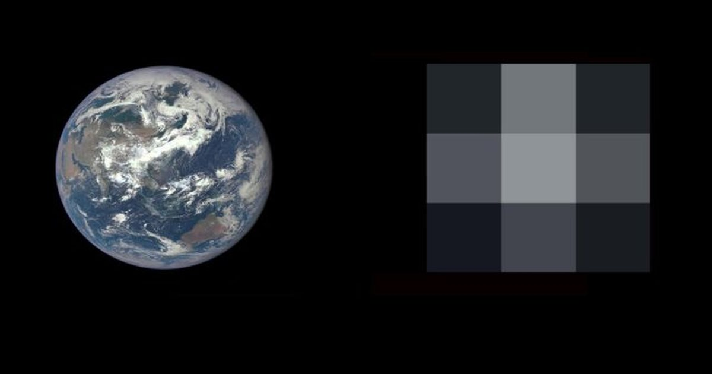

НАСА готовит миссию для поиска обитаемых миров: что известно об обсерватории пригодных для жизни миров
Национальное управление аэронавтики и космического пространства США разрабатывает новый флагманский проект — обсерваторию пригодных для жизни миров. Её главная цель — получить прямые изображения экзопланет, похожих на Землю по размеру и температуре, вращающихся вокруг солнеподобных звёзд.
Почему текущие телескопы не справляются с задачей
Существующие наземные и космические обсерватории, включая Джеймса Уэбба и десятиметровые наземные телескопы, уже позволяют изучать атмосферы крупных экзопланет и суперземель около красных карликов. Однако они принципиально не способны зафиксировать свет от планет земного размера на орбитах, аналогичных земной, вокруг звёзд типа Солнца — такие объекты слишком слабы и теряются в свете своих родительских светил.
Для прямого изображения нужны инструменты, способные отделить планету от звезды по угловому расстоянию и подавить звёздный свет в тысячи раз эффективнее, чем это делают современные коронаграфы. Только так можно получить спектры атмосфер потенциально пригодных для жизни горных планет и искать в них признаки биологической активности.

Как будет устроена обсерватория пригодных для жизни миров
Проект объединяет лучшие решения двух ранее предложенных концепций — ХабЭкс и Лювоир — и попадает в «золотую середину» между технической реализуемостью, научным потенциалом и стоимостью. Главное зеркало диаметром 6–6,5 метра будет сопоставим с зеркалом Уэбба по площади, но телескоп будет работать в оптическом и ультрафиолетовом диапазонах, что критично для спектроскопии атмосфер экзопланет.
Ключевое отличие от Уэбба — отсутствие принципиально новых технологий, требующих разработки с нуля. Все элементы: сегментированное зеркало, передвижные зеркала для стабилизации волнового фронта, высокопроизводительный коронаграф и спектрографы — уже имеют наработки или протестированы на других миссиях. Это снижает риски задержек и перерасходов бюджета.

Что даст новая обсерватория науке
С заданными характеристиками обсерватория сможет непосредственно получить изображения планет земного типа вокруг всех солнеподобных звёзд в радиусе около 14 световых лет. В этом объёме находится несколько десятков звёздных систем, где по расчётам могут находиться от 20 до 30 планет с параметрами, близкими к земным. Увеличение диаметра зеркала даже на небольшую величину многократно расширит поисковый объём.
Спектроскопия этих миров позволит определять состав атмосфер, температуру поверхности, наличие облаков и, возможно, биосигнатур — газовых смесей, которые сложно объяснить без биологических процессов. Это переведёт поиск внеземной жизни из области статистических оценок в область прямого изучения конкретных планет.
Этапы подготовки и роль предшественников
Перед запуском флагманской миссии критически важную роль сыграет миссия Нэнси Грейс Роман с её коронаграфом нового поколения. Она должна продемонстрировать в космосе технологию подавления звёздного света на уровне, в тысячу раз превосходящем возможности Уэбба. Успешные тесты Роман станут доказательством готовности ключевых систем для основной миссии.
Параллельно развивается наземная инфраструктура: тридцатиметровые телескопы следующего поколения — ГМТ, ЭЛТ и потенциально Экзо-Лайф Файндер — будут дополнять космические наблюдения высокой спектральной разрешающей способностью. Десятилетние обзоры Национальной академии наук США последовательно выстраивают приоритеты, и обсерватория пригодных для жизни миров получила статус высшей приоритетной большой миссии следующего десятилетия.
Коротко: Обсерватория пригодных для жизни миров — это первый проект, созданный специально для прямого обнаружения и изучения земноподобных планет у солнеподобных звёзд. Её реализация переведёт вопрос «Одни ли мы во Вселенной?» из разряда философских в разряд экспериментально решаемых.
Как вы считаете, какое открытие станет самым важным для человечества: обнаружение простейшей жизни или сигналов разумной цивилизации?